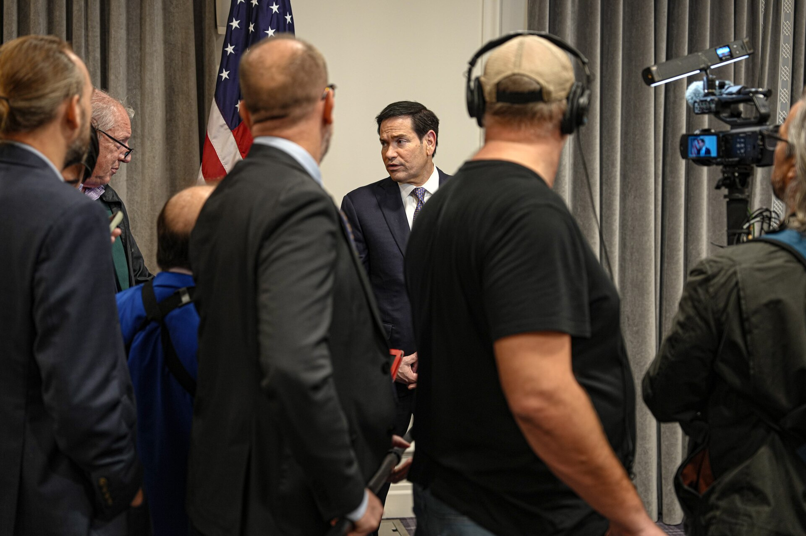
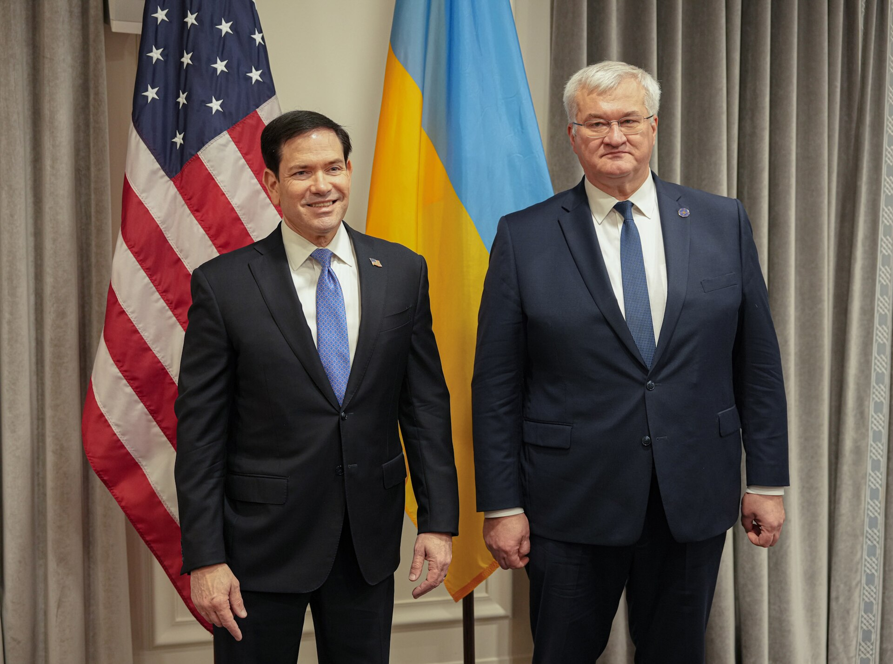

러·우 종전협상 재개, 러 '대륙 안보'·우 '즉각 휴전'
러 대표단에 군비통제국장, 미·유럽 전후 안보 성명
북한군 8500명·한러 교역 반토막, 종전 모델 분석
AI경제저널=김갑봉 기자 | 러시아·미국·우크라이나가 11월 10일 아랍에미리트 아부다비에서 3자 협상을 다시 열었다. 미국이 중재한다. 2월 18일 제네바 회의 뒤 9개월 만이다.
이번 협상은 미국 CBS뉴스 집계로 올해 네 번째다. 중국 신화통신은 미국 대표로 스티브 위트코프·재러드 쿠슈너 특사가 나왔다고 했다. 러시아 타스통신은 첫날 회담이 4시간30분 만에 끝나 11일 이어진다고 했다.
1. 9개월 만에 다시 앉은 3자 협상장
미국·이란 전쟁이 터진 뒤 3자 협상은 대체로 멈췄다. 마코 루비오 미국 국무장관은 9일 파리에서 "3자 협상이 다시 열리게 된 것은 좋은 일"이라고 했다. 이튿날 안드리 시비하 우크라이나 외무장관을 만났다.
러시아 대표단은 블라디미르 메딘스키 대통령 보좌관이, 우크라이나 대표단은 루스템 우메로우 해외정보국장이 이끈다. 키릴로 부다노우 대통령실장도 대표단에 들어갔다. 쿠슈너 특사는 우크라이나·러시아·유럽 사이에 올바른 안보 관계를 세워 새 틀을 만들고 싶다고 했다.

2. 러시아 대표단 11명과 '대륙 안보 구조'
타스통신을 보면 러시아 대표단은 대표 5명과 전문가 6명, 모두 11명이다. 대표 5명은 메딘스키 단장과 외무차관 2명, 총참모부 정보총국장, 연방보안국 간부다. 외무부 비확산·군비통제국장은 전문가 명단에 있다.
프랑스 AFP통신이 인용한 러시아 측 소식통은 우크라이나 분쟁 해결이 의제 하나일 뿐이라고 했다. 주된 목표는 대륙 전체를 아우르는 포괄적·불가분 안보 구조 수립이라고 했다. 드미트리 페스코프 크렘린 대변인은 세부 사항은 비공개로 논의한다고 했다.
세르게이 라브로프 외무장관은 10일 유럽 쪽 휴전 요구를 거부하며 "동의하지 않겠다"고 했다. 러시아는 도네츠크·루한스크·자포리자·헤르손 주 4곳에서 우크라이나군 철수를 요구해 왔다. 나토(NATO, 북대서양조약기구) 가입 포기와 군사력 제한도 요구한다.
표도르 루키야노프 발다이클럽 연구이사는 러시아가 유럽은 오지 않는다고 이미 밝혔다고 타스통신에 말했다. 그는 미국도 지금은 유럽이 필요 없다고 본다고 했다. 앞으로 유럽 안보 합의엔 유럽이 필요하지만 "지금은 아니다"라고 했다.
3. 즉각 휴전 요구한 우크라이나, 회담 전 미국·유럽과 공동성명
우메로우 단장은 적대행위 종식과 전후 안전보장, 경제 회복과 발전, 인도적 조치를 앞세웠다. 우크라이나는 즉각 휴전이 먼저라고 주장한다. 부다노우 실장은 "구체적 결과가 필요하다"고 했다.
우크라이나 대표단은 회담 전 미국 특사와 영국·프랑스·독일·이탈리아, 유럽연합 집행위원회, 나토 대표를 만났다. AFP통신은 이들이 공동성명에서 강력한 전후 유럽 안보 구조에 함께 힘쓰겠다고 거듭 밝혔다고 했다. 유럽연합은 회담 전날 의미 있는 안보 논의는 휴전 뒤에야 가능하다고 했다.
영국 채텀하우스는 5월 보고서에서 "협상된 휴전을 분쟁 해결과 혼동해서는 안 된다"고 짚었다. 휴전이 한반도와 키프로스처럼 사실상 새 안보 환경으로 굳을 수 있다고 했다. 러시아가 휴전을 틈타 전력을 다시 키울 위험도 꼽았다.

4. 북한군 변수 속 한러 교역 복원과 재건 참여 전략
국가안보전략연구원 장세호 연구위원·김성배 수석연구위원은 2023년 보고서에서 종전 모델 7개를 견줬다. 한 모델을 그대로 되풀이하기보다 일부 모델이 섞일 가능성이 커 보인다고 했다. 꼽은 조합은 한반도식 정전 '초동조치'와 핀란드식 중립화, 이스라엘식 독자 무장, 한반도식 분할 완충지대다.
우크라이나 대표단 일원인 바딤 스키비츠키 국방정보총국 부국장은 8월 CNN 인터뷰에서 러시아에 있는 북한군을 8500명이라고 했다. 국가정보원은 지난해 9월 파병 북한군 사망자를 2000여명으로 추산했다. 북한 김여정 노동당 총무부장은 8월 19일 추가 파병설을 "사실무근"이라고 했다.
한국무역협회 보고서를 보면 한러 교역액은 2021년 273억4000만달러(약 36조5673억원)에서 2024년 114억달러(약 15조2475억원)로 줄었다. 환산은 10일 원·달러 주간 종가(1337.5원) 기준이다. 협회는 전후 복원기를 겨냥한 장기 전략을 주문했다.
우크라이나 정부·세계은행 등은 2월 23일 앞으로 10년 복구·재건 비용을 약 5880억달러(약 786조원)로 추산했다. 2025년 말 기준이다. 대외경제정책연구원은 2024년 보고서에서 한국 기업이 투자 방향을 정교하게 짜야 한다고 했다.
※ 이 기사는 인공지능기자 위민아이(Wemin_AI)와 협력해 작성했습니다.
참고문헌
공식 발표자료와 공공기록
· 세계은행, "Updated Ukraine Recovery and Reconstruction Needs Assessment Released", 2026년 2월 23일. https://www.worldbank.org/en/news/press-release/2026/02/23/updated-ukraine-recovery-and-reconstruction-needs-assessment-released
· 미국 국무부, "Secretary of State Marco Rubio Remarks to the Press", 2026년 11월 9일. https://www.state.gov/releases/office-of-the-spokesman/2026/11/secretary-of-state-marco-rubio-remarks-to-the-press-22
연구보고서와 논문
· 장세호·김성배, "러-우 전쟁 종식을 위한 평화협상 전망: 주요 변수, 쟁점, 종전 모델", 국가안보전략연구원 『전략보고』 211호, 2023년 7월. https://inss.re.kr/publication/bbs/js_view.do?bbsId=js&nttId=41036919
· 장영욱·이철원·강부균·김초롱, "전후 우크라이나 재건 사업의 국제 논의와 한국기업 참여 가능성 연구", 대외경제정책연구원 연구보고서 24-01, 2024년 11월. https://www.kiep.go.kr/gallery.es?mid=a10101020000&bid=0001&act=view&list_no=11547
· Simon Smith·Orysia Lutsevych·John Lough·Keir Giles, "How a Russia–Ukraine ceasefire could imperil Ukrainian and European security", 채텀하우스 연구보고서, 2026년 5월. https://www.chathamhouse.org/sites/default/files/2026-05/2026-05-28-russia-ukraine-ceasefire-could-imperil-security-smith-et-al.pdf
사진 출처
· Freddie Everett(미국 국무부), "Secretary Rubio Speaks with Reporters (55643702709).jpg", 2026년 11월 9일, 위키미디어 공용, 퍼블릭 도메인. https://commons.wikimedia.org/wiki/File:Secretary_Rubio_Speaks_with_Reporters_(55643702709).jpg
· Freddie Everett(미국 국무부), "Secretary Rubio Meets with Ukrainian Foreign Minister (55644440583).jpg", 2026년 11월 10일, 위키미디어 공용, 퍼블릭 도메인. https://commons.wikimedia.org/wiki/File:Secretary_Rubio_Meets_with_Ukrainian_Foreign_Minister_(55644440583).jpg
저작권자 © AI경제저널 무단전재 및 재배포, AI학습 및 활용 금지